宗教 Religion
对于部分职业而言，神祇的选择至关重要——例如神卫和牧师——但是大多数角色对一个神祇付出信念，以寻求自身的目标并指导其抉择，在困难与逆境中尤其。部分人信仰一组众神，追随一个非神的宗教，例如苍翠誓约（Green
Faith），或者附和某种哲学。注意在各种世界上存在着更多神祇、宗教和哲学，包括格拉里昂（Golarion），这在后文详细表述。
神祇 Deities
任何人都可以信仰一个神祇，但是信仰者应当追随信仰的典范（Edicts，信仰所鼓励的行为）以及远离其禁忌（Anathemas，信仰所唾弃的行动）。下列每个神祇在其名称后都列出一个阵营，后续是典范、禁忌、追随者阵营的简短描述。再后面是最虔诚的信徒所获得的的受益。仅当你是神祇的牧师或者其他规则给予你信徒奖励时，才会获得这些奖励。
阿巴达尔 Abadar（守序中立 LN）
原初宝库之主（The Master of the First
Vault）掌控城市、法律、商贸和财富。阿巴达尔将文明带入世界的荒蛮角落，鼓励遵守法律，并促进文明间的商务和贸易来往。他也鼓励不同族裔之间的合作。
典范：将文明带到边远地区，通过工作和贸易收获财富，遵守法律。
禁忌：成为强盗或者海盗，盗窃，破坏遵守法律的法庭。
追随者阵营：守序善良（LG），守序中立（LN），守序邪恶（LE）
信徒增益 Devotee Benefits
神力源泉：伤害术（Harm）或者治疗术（Heal）
神圣技能：社群（Society）
偏好武器：弩（Crossbow）
领域：城市（Cities），土（Earth），旅行（Travel），财富（Wealth
牧师法术：1环：幻象造物（Illusory
Object），4环：造物术（Creation），7环：辉煌豪宅（Magnificent
Mansion）
阿斯摩蒂斯 Asmodeus（守序邪恶 LE）
黑暗亲王（The Prince of
Darkness）控制协议、骄傲、奴役和保证，他乐于诱导凡人追随邪恶之道。他鼓励严格的制度结构，每个人都清楚其地位。同时，他为自私自利而利用秩序。
典范：尽力建立协议，暴力统治并折磨弱者，对强者表示顺从。
禁忌：破坏协议，释放奴隶，以对敌人宽恕来冒犯阿斯摩蒂斯。
追随者阵营：守序邪恶（LE）
信徒增益 Devotee Benefits
神力源泉：伤害术（Harm）
神圣技能：欺骗（Deception）
偏好武器：硬头锤（Mace）
领域：自信（Confidence），火（Fire），诡术（Trickery），暴政（Tyranny）
牧师法术：1环：魅惑术（Charm），4环：暗示术（Suggestion），6环：假像术（Mislead）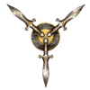
卡莉斯翠 Calistria（混乱中立 CN）
喜怒无常的女神称为醉人毒刺（Savored Sting），她赞颂欲望，复仇，和诡计。尽管卡莉丝翠被精灵广泛崇拜，很多其他族裔也追随其信念。
典范：追随个人自由，享受刺激欢乐，实施复仇
禁忌：沉迷爱情或者醉心复仇，对轻蔑不作回应
追随者阵营：混乱善良（CG），混乱中立（CN），混乱邪恶（CE）
信徒增益 Devotee Benefits
神力源泉：伤害术（Harm）或者治疗术（Heal）
神圣技能：欺骗（Deception）
偏好武器：鞭（Whip）
领域：痛苦（Pain），热情（Passion），秘密（Secrecy），诡术（Trickery）
牧师法术：1环：魅惑术（Charm），3环：注目术（Enthrall），6环：假像术（Mislead）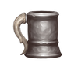
凯登·凯连 Cayden Cailean（混乱善良，CG）
酒醉英雄（The Drunken
Hero）在一次醉酒后升神，成为麦酒、自由和葡萄酒的神。凯登崇尚自由，鼓励人们找寻自身生命的道路。他为正义而战，并沉醉于最好的佳酿。
典范：饮酒，解放奴隶，帮助被压迫者，追寻荣誉和冒险。
禁忌：浪费酒，自私自利或者醉后冷漠无情，蓄奴
追随者阵营：中立善良（NG），混乱善良（CG），混乱中立（CN）
信徒增益 Devotee Benefits
神力源泉：治疗术（Heal）
神圣技能：运动（Athletics）
偏好武器：细剑（Rapier）
领域：城市（Cities），自由（Freedom），暴食（Indulgence），威力（Might）
牧师法术：1环：大步奔行（Fleet Step），2环：愚者之触（Touch Of
Idiocy），5环：海市蜃楼（Hallucination）
黛丝娜 Desna（混乱善良，CG）
温柔的星域之歌（Song of The Spheres）主宰梦境、星云、星辰和旅行者。黛斯纳是一位古老的神祇，崇尚自由和神秘，她也如此激励其追随者。
典范：帮助同行者，探索新的地区，以艺术或者歌曲表达自己，找寻生命的意义
禁忌：带来恐惧或者绝望，施放梦魇术（Nightmare）或者类似的魔法来腐蚀梦境，参与偏执行为
追随者阵营：中立善良（NG），混乱善良（CG），混乱中立（CN）
信徒增益 Devotee Benefits
神力源泉：治疗术（Heal）
神圣技能：特技（Acrobatics）
偏好武器：星刃（Starknife）
领域：梦境（Dreams），机运（Luck），月亮（Moon），旅行（Travel）
牧师法术：1环：
睡眠术（Sleep），4环：飞行术（Fly），5环：梦境训练（Dreaming Potential）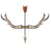
埃拉斯蒂尔 Erastil（守序善良，LG）
古老神猎（Old Deadeye）是家庭、农耕、打猎和贸易的神祇。很久以前他是一位长着角的狩猎神，但是他的信仰演化为专注于乡村社区。
典范：关心你的家和家庭，完成你的义务，保持和平，保护社区
禁忌：在需要你的时候离家出走，看重自身高于社区，玷污自身的名声，撒谎
追随者阵营：守序善良（LG），中立善良（NG），守序中立（LN）
信徒增益 Devotee Benefits
神力源泉：治疗术（Heal）
神圣技能：生存（Survival）
偏好武器：长弓（Longbow）
领域：土（Earth），家庭（Family），自然（Nature），财富（Wealth）
牧师法术：1环：
克敌机先（True Strike），3环：棘墙术（Wall Of Thorns），5环：融身入林（Tree
Stride）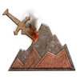
古拉姆 Gorum（混乱中立，CN）
士兵们吼出对钢铁领主（Our Lord In
Iron）的祈祷，他是战争之神，力量之神，武器之神。古拉姆强调力量和能量，鼓励信徒追随战争和战斗，这正是追随其信仰的最高形式。
典范：在公平战斗中得到胜利，追求极限，在战斗中穿戴盔甲
禁忌：杀死投降的敌人或者囚犯，以沟通避免冲突，通过暗箱手段或者间接的魔法赢得战斗
追随者阵营：混乱中立（CN），混乱邪恶（CE）
信徒增益 Devotee Benefits
神力源泉：伤害术（Harm）或者治疗术（Heal）
神圣技能：运动（Athletics）
偏好武器：巨剑（Greatsword）
领域：自信（Confidence），毁灭（Destruction），威力（Might），狂热（Zeal）
牧师法术：1环：克敌机先（True
Strike），2环：变巨术（Enlarge），4环：武器风暴（Weapon Storm）
哥兹莱 Gozreh（绝对中立，N）
双相之神，被称为风澜（the Wind and the Waves），哥兹莱掌控自然、大海和天气。德鲁伊以及保持自然的人中信仰哥兹莱较多。
典范：珍视、保护并尊敬任何形态的自然
禁忌：将文明引入自然，创造不死生物，毁坏自然美丽区域
追随者阵营：中立善良（NG），守序中立（LN），绝对中立（N)，混乱中立（CN），中立邪恶（NE）
信徒增益 Devotee Benefits
神力源泉：治疗术（Heal）
神圣技能：生存（Survival）
偏好武器：三叉戟（Trident）
领域：气（Air），自然（Nature），旅行（Travel），水（Water）
牧师法术：1环：造风术（Gust
Of Wind），3环：闪电束（Lightning Bolt），5环：操纵水位（Control
Water）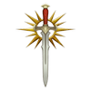
艾欧梅黛 Iomedae（守序善良，LG）
艾欧梅黛是荣耀、正义、统治和勇敢的女神，她因在人神陨灭时继承了他的斗篷而被称为后继者（The
Inheritor）。在她升神之前，艾欧梅黛是一位这个星球上的凡人。许多圣骑士追随其信念。
典范：保持温和，为正义和荣誉而战，心中保持勇气
禁忌：抛弃需要你的伙伴，放弃荣誉，拒绝平等的挑战
追随者阵营：守序善良（LG），中立善良（NG）
信徒增益 Devotee Benefits
神力源泉：治疗术（Heal）
神圣技能：威吓（Intimidation）
偏好武器：长剑（Longsword）
领域：自信（Confidence），威力（Might），真相（Truth），狂热（Zeal）
牧师法术：1环：克敌机先（True Strike），2环：变巨术（Enlarge），4环：火焰护盾（Fire
Shield）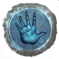
义洛理 Irori（守序中立，LN）
万宗师范（Master Of
Masters）到达大彻大悟时，他成为历史、知识和自我完善之神。义洛理崇尚纪律，并教导众人能掌握自己的人也能够在世界中获得最大的受益。
典范：谦逊；帮助他人完善自身；磨炼你的身体，精神和灵魂以到达更完美；实践纪律
禁忌：沉迷某物质，摧毁重要的历史文本，反复在自我控制中失败
追随者阵营：守序善良（LG），守序中立（LN），守序邪恶（LE）
信徒增益 Devotee Benefits
神力源泉：伤害术（Harm）或者治疗术（Heal）
神圣技能：运动（Athletics）
偏好武器：拳（Fist）
领域：知识（Knowledge），威力（Might），完美（Perfection），真相（Truth）
牧师法术：1环：跳跃术（Jump），3环：加速术（Haste），4环：石肤术（Stoneskin）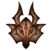
拉玛什图 Lamashtu（混乱邪恶，CE）
怪物之母（The Mother Of Monsters）是怪异、怪物和梦魇的女神。她寻找堕落的凡人，将世间布满其扭曲和怪异的子嗣。
典范：为被抛弃的、被压迫的人带来力量，教授孩子拉玛什图的教诲，用美丽的怪异揭示世间的腐坏和错误
禁忌：尝试治愈精神疾病或者畸形，为拉玛什图的敌人提供援助
追随者阵营：混乱邪恶（CE）
信徒增益 Devotee Benefits
神力源泉：伤害术（Harm）或者治疗术（Heal）
神圣技能：生存（Survival）
偏好武器：弯刃大刀（Falchion）
领域：家庭（Family），威力（Might），噩梦（Nightmares），诡术（Trickery）
牧师法术：1环：魔牙术（Magic Fang），2环：动物形态（Animal
Form），4环：梦魇术（Nightmare）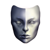
内希斯 Nethys（绝对中立，N）
全知之眼（The All-Seeing Eye）是魔法之神，具有破坏和保持的二元本质；他能见证任何事物的能力令其思维破碎。
典范：追寻魔法力量并使用它
禁忌：追寻常规的方式而不是魔法
追随者阵营：中立善良（NG），守序中立（LN），绝对中立（N)，混乱中立（CN），中立邪恶（NE）
信徒增益 Devotee Benefits
神力源泉：伤害术（Harm）或者治疗术（Heal）
神圣技能：奥秘（Arcana）
偏好武器：木杖（Staff）
领域：毁灭（Destruction），知识（Knowledge），魔法（Magic），防护（Protection）
牧师法术：1环：魔法飞弹（Magic Missile），2环：魔嘴（Magic
Mouth），3环：浮空术（Levitate），4环：闪现术（Blink），5环：窥视魔眼（Prying
Eye），6环：力墙术（Wall Of Force），7环：心灵扭曲（Warp
Mind），8环：迷宫术（Maze），9环：裂解术（Disjunction）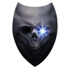
诺格巴 Norgorber（中立邪恶，Ne）
贪婪、谋杀、毒药和秘密之神有四种形象：黑手指（Blackfingers），下毒者和炼金术士的伙伴；皮锯圣父（Father
Skinsaw），谋杀之父；灰宗师（Gray Master），盗窃大师；除名者（Reaper Of Reputation），神秘莫测。
典范：保持身份秘密，在必要时牺牲任何人，在战斗中不择手段，在暗中行动
禁忌：让真实身份和暗中交易有所牵涉，自由分享秘密，展现怜悯
追随者阵营：守序邪恶（LE），中立邪恶（NE），混乱邪恶（CE），如果追随除名者也包括绝对中立（N）
信徒增益 Devotee Benefits
神力源泉：伤害术（Harm）
神圣技能：隐匿（Stealth）
偏好武器：短剑（Shortsword）
领域：死亡（Death），秘密（Secrecy），诡术（Trickery），财富（Wealth）
牧师法术：1环：幻象伪装（Illusory
Disguise），2环：隐形术（Invisibility），4环：魅影杀手（Phantasmal
Killer）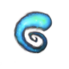
法莱斯玛 Pharasma（绝对中立，N）
甚至比其他神更为古老且强大的墓穴女士（Lady Of
Graves）掌管出生，死亡，命运和预言。她在骨园（Boneyard）的神座，审判所有逝去的灵魂，她保护自然的生死循环——灵魂之河（The River Of
Souls）——不受干扰。
典范：理解古老的预言，消灭不死生物，让死者安息
禁忌：创造不死生物，亵渎尸体，劫掠坟墓
追随者阵营：中立善良（NG），守序中立（LN），绝对中立（N）
信徒增益 Devotee Benefits
神力源泉：治疗术（Heal）
神圣技能：医疗（Medicine）
偏好武器：匕首（Dagger）
领域：死亡（Death），命运（Fate），治疗（Healing），知识（Knowledge）
牧师法术：1环：
讯息传递（Mindlink），3环：幽冥武器（Ghostly Weapon），4环：魅影杀手（Phantasmal
Killer）
洛瓦古格 Rovagug（混乱邪恶，CE）
毁天巨兽（The Rough
Beast）是毁灭、灾难和暴怒之神。他很久被其他神祇通力合作以前被囚禁在格拉里昂的核心，并寻找一天能重获自由并为世界带来大灾难。
典范：摧毁一切，解放洛瓦古格
禁忌：创造新事物，让物质关系限制你，通过折磨受害者或者其他方式拖延毁灭
追随者阵营：中立邪恶（NE），混乱邪恶（CE）
信徒增益 Devotee Benefits
神力源泉：伤害术（Harm）
神圣技能：运动（Athletics）
偏好武器：巨斧（Greataxe）
领域：气（Air），毁灭（Destruction），地（Earth），狂热（Zeal）
牧师法术：1环：燃烧之手（Burning
Hands），2环：变巨术（Enlarge），6环：解离术（Disintegrate）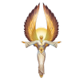
塞恩蕾 Sarenrae（中立善良，NG）
晨花（The
Dawnflower）是治愈、诚实、救赎与太阳的女神。塞恩蕾曾经是一位强大的天使和天界领主，她领导囚禁洛瓦古格的战争。她会在可能的时候救赎邪恶，否则迅速消灭。
典范：消灭洛瓦古格之嗣（Spawn of Rovagug），保护盟友，对伤者和病人实施帮助，寻求可能的救赎
禁忌：创造不死生物，撒谎，拒绝寻求救赎的悔过者，没能击倒邪恶
追随者阵营：守序善良（LG），中立善良（NG），混乱善良（CG）
信徒增益 Devotee Benefits
神力源泉：治疗术（Heal）
神圣技能：医疗（Medicine）
偏好武器：弯刀（Scimitar）
领域：火（Fire），治疗（Healing），太阳（Sun），真相（Truth）
牧师法术：1环：燃烧之手（Burning
Hands），3环：火球术（Fireball），4环：火墙术（Wall Of Fire）
纱琳 Shelyn（中立善良，NG）
永恒玫瑰（The Eternal
Rose）是艺术、美、爱和音乐的女神。他寻去某日能救赎其堕落的兄弟，宗－库山。纱燐推崇和平与爱，她鼓励追随者在有时黑暗的世界中创造美。
典范：保持和平，投身并完善一项艺术，以身作则，在一切事物中看到美
禁忌：摧毁艺术或者放任其被摧毁，除非用以拯救生命或者追求更高的艺术；拒绝接受投降
追随者阵营：守序善良（LG），中立善良（NG），混乱善良（CG）
信徒增益 Devotee Benefits
神力源泉：治疗术（Heal）
神圣技能：选择工艺（Crafting）或者表演（Performance）
偏好武器：大砍刀（Glaive）
领域：创造（Creation），家庭（Family），热情（Passion），防护（Protection）
牧师法术：1环：七彩喷射（Color
Spray），3环：注目术（Enthrall），4环：造物术（Creation）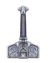
托拉格 Torag（守序善良，LG）
矮人神造物之父（Father of Creation）是锻造、防护和战略之神。尽管主要被矮人信仰，看重工艺和创造的人也会追随托拉格。
典范：高尚而直接，遵守诺言，尊重铸造，服务人民
禁忌：撒谎或者欺骗默认，故意制造次等作品，对你的人民的敌人怜悯
追随者阵营：守序善良（LG），守序中立（LN）
信徒增益 Devotee Benefits
神力源泉：治疗术（Heal）
神圣技能：工艺（Crafting）
偏好武器：战锤（Warhammer）
领域：创造（Creation），土（Earth），家庭（Family），防护（Protection）
牧师法术：1环：讯息传递（Mindlink），3环：地缚术（Earthbind），4环：造物术（Creation）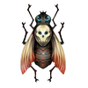
厄加图娅 Urgathoa（中立邪恶，NE）
恶毒的苍姬（Pallid Princess）主管疾病，暴食和不死生物。
典范：在死后成为不死生物，创造或者保护不死生物，满足自己的欲望
禁忌：禁欲，摧毁不死生物，奉献生命
追随者阵营：守序邪恶（LE），中立邪恶（NE），混乱邪恶（CE）
信徒增益 Devotee Benefits
神力源泉：伤害术（Harm）
神圣技能：威吓（Intimidation）
偏好武器：巨镰（Scythe）
领域：暴食（Indulgence），魔法（Magic），威力（Might），亡灵（Undeath）
牧师法术：1环：地精疹（Goblin Pox），2环：虚假生命（False
Life），7环：惊骇假面（Mask Of Terror）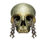
宗－库山 Zon-Kuthon（守序邪恶，LE）
午夜领主（The Midnight
Lord）是黑暗、嫉妒、失落和痛苦之神。他曾经是一位如同纱琳的艺术、美和音乐之神，在位面之间的黑暗空间的短暂逗留可怕地改变了他。
典范：为世界带来痛苦，毁坏自己的身体
禁忌：创造永久或者长期的光源，为受苦的人提供安抚
追随者阵营：守序中立（LN），守序邪恶（LE），中立邪恶（NE）
信徒增益 Devotee Benefits
神力源泉：伤害术（Harm）
神圣技能：威吓（Intimidation）
偏好武器：刺链（Spiked Chain）
领域：野心（Ambition），黑暗（Darkness），毁灭（Destruction），痛苦（Pain）
牧师法术：1环：幻痛术（Phantom Pain），3环：棘墙术（Wall Of
Thorns），5环：行影术（Shadow Walk）
信念与哲学 Faiths And Philosophies
当然，尊崇一个神明不是表达信念的唯一方式。后文列出一些非神祇的宗教和哲学。牧师可以与相关的信念或哲学共事，但是这里列出的内容作用于其他职业——例如具有神术血脉的术士、德鲁伊或者武僧——以作为其方针。这些信念和哲学没有为信徒提供收益的上位神性。
无神论 Atheism
尽管多数人认为神祇存在，部分人却认为他们不值得信仰，少数人甚至直接否认神的存在。
典范：相信自身有突出的能力并追求个人目标
禁忌：对神祇祈祷
追随者阵营：所有阵营
苍翠誓约 Green Faith
苍翠誓约的崇拜者中有多数是德鲁伊。他们认为自然即是神力，从理解自身在自然规律中的位置中获取力量。
典范：引导文明和自然和谐共处，保护自然环境，保护濒危物种
禁忌：对自然环境造成破坏，以非食物和自卫的原因杀死动物，允许滥用自然资源
追随者阵营：混乱中立（CN），守序中立（LN），绝对中立（N），中立邪恶（NE），中立善良（NG）
卡利斯拉德预言 Prophecies Of Kalistrade
这种古怪神秘的梦境记录教导人们，财富可以通过严格和节制的行为规范来得到。
典范：收集个人财富，鼓励和帮助商业，无论性别族裔地欢迎新人
禁忌：轻率地花钱；将金钱给予不配财富的人；在物欲和饮食中放纵自己
追随者阵营：守序善良（LG），守序中立（LN），守序邪恶（LE）
默语之道 Whispering Way
这些密教徒相信不死生物是存在的最终形态，生命应当为死后转变为更崇高的亡灵而做准备。
典范：寻找成为不死生物的方式（巫妖，如果可能的话），对抗想要毁灭不死生物的人，保护死灵的秘密，服侍默语暴君（Whispering
Tyrant）
禁忌：销毁死灵文本（除非这揭示默语之道的秘密），以非低声私语的形式教导他人默语之道，使用正能量伤害不死生物
追随者阵营：守序邪恶（LE），中立邪恶（NE），混乱邪恶（CE）
领域 Domains
格拉里昂的主要神祇使用下面的领域，在437-440页列出。
表8-2：领域
| 领域 |
描述 |
领域法术 |
进阶领域法术 |
| 野心 Ambition |
你尽全力追赶，甚至超越竞争者。 |
盲目野心 Blind Ambition |
竞争优势 Competitive Edge |
| 气 Air |
你可以控制风与气相。 |
推击狂风 Pushing Gust |
消散如风 Disperse Into Air |
| 城市 Cities |
你具有掌控城市环境及其居民的能力。 |
芸芸众生 Face In The Crowd |
城市脉动 Pulse Of The City |
| 自信 Confidence |
你克服你的恐惧，并展现骄傲。 |
信心帷幕 Veil Of Confidence |
傲慢妄想 Delusional Pride |
| 创造 Creation |
你具有与手艺与艺术相关的神术力量。 |
艺术喷涌 Splash Of Art |
华彩点缀 Artistic Flourish |
| 黑暗 Darkness |
你在黑暗中行动，并驱散光明。 |
暗影披风 Cloak Of Shadow |
熄灭视野 Darkened Eyes |
| 死亡 Death |
你拥有终结生命和摧毁不死生物的能力。 |
斩杀号令 Death's Call |
亡灵绝灭 Eradicate UndeaTD |
| 毁灭 Destruction |
你是神祇蹂躏世间的向导。 |
毁灭战吼 Cry Of Destruction |
毁灭灵光 Destructive Aura |
| 梦境 Dreams |
你拥有进入和操控梦境的能力。 |
甜蜜美梦 Sweet Dreams |
催眠指令 Dreamer's Call |
| 土 Earth |
你可以操控土壤和岩石。 |
投石术 Hulrtling Stone |
局部地震 Localized Quake |
| 家庭 Family |
你能更有效地帮助与保护你的家庭和社群。 |
慰心之语 Soothing Words |
团结 Unity |
| 命运 Fate |
你能预见与理解潜藏的无法避免的事情。 |
阅读命运 Read Fate |
挑战命运 Tempt Fate |
| 火 Fire |
你可以控制火焰。 |
火焰射线 Fire Ray |
火焰屏障 Flame Barrier |
| 自由 Freedom |
你从镣铐或制约中解放你自己或其他人。 |
无碍步伐 Unimpeded Stride |
自由之语 Word Of Freedom |
| 治疗 Healing |
你的治愈魔法尤其强力。 |
医者祝福 Healer's Blessing |
制止死亡 Rebuke Death |
| 暴食 Indulgence |
你山吃海喝，并且可以消除过度放纵的危害。 |
强迫填食 Overstuff |
自然发作 Take Its Course |
| 知识 Knowledge |
你通过神术看透世界本貌。 |
博学强记 Scholarly Recollection |
知敌要害 Know The Enemy |
| 机运 Luck |
你不寻常地走运，并且远离不好的选择。 |
小幸运 Bit Of Luck |
时来运转 Lucky Break |
| 魔法 Magic |
你制造毫无预兆或无法解释的现象。 |
魔力传导 Magic's Vessel |
神秘信标 Mystic Beacon |
| 威力 Might |
神术力量强化了你的身体能力。 |
体能爆发 Athletic Rush |
忍耐之力 Enduring Might |
| 月亮 Moon |
你可以驱使与月亮相关的力量。 |
月亮射线 Moonbeam |
月相触礼 Touch Of The Moon |
| 自然 Nature |
你拥有掌控动物与植物的力量。 |
护体棘刺 Vibrant Thorns |
自然馈赠 Nature's Bounty |
| 梦魇 Nightmare |
你将恐怖与畏惧填入无数意识中。 |
白日噩梦 Waking Nightmare |
噩梦链接 Shared Nightmare |
| 痛苦 Pain |
你用可怕的痛苦来折磨令你不快的人。 |
品尝剧痛 Savor The Sting |
苦痛报应 Retrubutive Pain |
| 热情 Passion |
你创造热情，不管是通过热爱还是欲望。 |
魅惑之触 Charming Touch |
迷人情态 Captivating Adoration |
| 完美 Perfection |
你尽你所能，来完美你的意志，身体与精神。 |
纯粹意志 Perfected Mind |
无暇形态 Perfected Form |
| 防护 Protection |
你保护自身和他人。 |
献身守护 Protector's Sacrifice |
防护领域 Protector's Sphere |
| 秘密 Secrecy |
你保护秘密，并保证它们不为人知。 |
强迫安静 Forced Quiet |
保卫机密 Safeguard Secret |
| 太阳 Sun |
你操控太阳和其他光源的力量，为亡灵带来惩戒。 |
耀眼闪光 Dazzling Flash |
神圣光辉 Positive Luminance |
| 旅行 Travel |
你拥有掌控移动和旅行的能力。 |
灵活脚步 Agile Feet |
行路无阻 Traveler's Transit |
| 诡术 Trickery |
你热衷欺骗他人以及带来误解。 |
瞬息换位 Sudden Shift |
诡计替身 Trickster's Twin |
| 真相 Truth）
| 你识破谎言并发现真相。 |
真实之语 Word Of Truth |
窥视真相 Glimpse The Truth |
| 暴政 Tyranny |
你拥有支配和奴役他人的力量。 |
服从之触 Touch Of Obedience |
敕令打击 Commanding Lash |
| 亡灵 Undeath |
你的魔法与不死生物紧密相连。 |
亡灵之触 Touch Of Undeath |
恶灵再生 Malignant Sustenance |
| 水 Water）
| 你可以控制水和水的各种形态。 |
潮汐涌流 Tidal Surge |
滂沱骤雨 Downpour |
| 财富 Wealth |
你拥有操控财富，贸易和宝藏的力量。 |
金银满目 Appearance Of Wealth |
化铁为金 Precious Metals |
| 狂热 Zeal |
你内心的烈火会增强你的战斗力量。 |
激发武器 Weapon Surge |
狂热待战 Zeal For Battle |